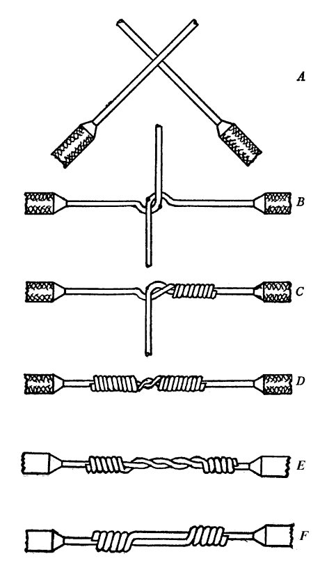

PED Class 1 Notes
Prototyping Electronic Devices
Temperature
Soldering iron only gets so hot because it has a thermocoupler (no argument with this). Adjustable. Gets close to 400°C/750°F which is hot enough to cause an injury that has real consequences. Do not pretend to get burned by the soldering iron in an animated way as some sort of joke because this is exactly how real accidents happen.
Solder melts at 183°C, so the iron gets much hotter to transfer enough heat to melt the solder in the short amount of time that we make contact. The longer you leave the iron on something the more you increase the chance of overheating. Overheating doesn't improve your connection, it can char the flux, break down the components, and damage the board. If you are not getting a good connection, apply more flux or increase the temperature.
Desoldering
Use the heated pad to 150°C
Use a hot air gun on the area
Use solder wick ideally. The solder sucker is EVIL - it's very possible to rip off the pads from the PCB if this tool is used too frequently. Personally I find the solder sucker irreplaceable for through hole cleaning, but it is this very scary tool. After you solder something wrong the first time it takes a lot longer to get it back to normal.
Flux
Must be a non-corrosive variety, watch out for this at the hardware store. Home Depot will get you in trouble. I really like the pen tips that gush flux.
Will be burned off in the process, this is what really makes you sick from breathing. If you're soldering all day, doing something like LEDs and you keep breathing it, you will become light headed and have a panic attack. A fume extractor is best for soldering, the little fans do nothing.
One thing I hate seeing is when solder cools in a spiky way, fix this by resoldering it after applying flux.
Static Electricity
Circuits are most sensitive to static when powered, so disconnect the power and ground yourself. One time I was working with a studio to assemble these greeting card screens for a custom event invitation and we kept frying the little modules. I figured it was static, so we had the guy doing it take off his shoes and put his bare feet on the wood floor and it stopped happening. Stuff like this gets people to respect you, so keep this knowledge dear.
Connecting Wires
If you want to impress someone use the NASA Splice or Lineman's Splice for joining two wires. This was invented for running telegram wires by Western Union. It causes the wire to tighten when pulled. Then a little solder? Pretty cool.
Any two wires that get soldered should be heat-shrunk. There are a couple types, black is consistent. I prefer not to use colored heatshrink because it's hard to match the diameters to the wires although this can be total wire porn if done right. There is also clear heatshrink tubing which is amazing when you want to show off your lineman's splice.
If you're a primitive ape you can use the side of your soldering iron to shrink it down to size. A lighter can be used to do heatshrink if you smoke cigarettes or are just otherwise handy. Heat gun is the best way, I think, because it's consistent and powerful. If you are joining together two huge wires and have a ton of area to close up, or your work was poor, or you want additional stress relief, you can inject the heatshrink with hot glue. Sometimes permanence can be messy.
Prototyping Techniques
Jumpers are cool but annoying to carry around. I prefer 22 gauge solid core wire. Engineers Edge says it can handle 5 amps of current which is way more than I typically push. Additionally, it can be measured to length on the breadboard and marked with a fingertip before cutting, so you can get a nice layout. This plus a breadboard does almost everything. Its worth it to spend the time and make it look nice, everone will find it so easy to troubleshoot for you, you will tnank yourself. Wires can also be labeled with a pen and a sharpie, a labeler can be used but I find them to be so slow
I like to use the Adafruit M0 or M4 protoboards because it's a fun small package with a little protoboard built in, almost everything I've built has fit onto one of these, but they're expensive.
Deadbug Free Electronics is a way to piss off everyone who has to check your work or exist in your space but it's pretty cool. When you get so good you can go bad.
https://hackaday.com/2016/05/04/getting-ugly-dead-bugs-and-going-to-manhattan/
https://www.instructables.com/Dead-Bug-Prototyping-and-Freeform-Electronics/
https://www.reddit.com/r/deadbug/
HOT GLUE
Hot glue is a prototyping staple. It can be used to secure components, provide strain relief, or insulate connections. It is also the most evil when it comes to making a mess, so use sparingly and carefully. I have pulled open a lot of props which were smothered in their last moments before going out the door. This is avoidable. Do not make others suffer with your hot glue usage. It can be removed, sometimes, with rubbing alcohol, which can cause it to pop right off. Another neat trick is getting it to reflow with a heat gun. I have even heard of some people using it as a cheap injection molding technique. Search hot glue injection molding hackaday
Wire Wrapping
30 AWG seems fun and cute to work with but I have never done this style of connections. Basically, you use a little rod shaped tool to help wrap the leg of a pin. An advantage is how easy it is to attach multiple wires to a pin.
Final Thoughts
The best way to start is to solder up your boards and just read them and think about what they mean, dream about the function of each component. Then go to the paper and draw, then connect and check, dabble with the multimeter, test and build in chunks. Find what's working and replace what isn't, this is why we can check out boards.
Finally, don't ask me if it's the anode or the cathode but the flat surface of the LED is NEGATIVE.